Free
computer Tutorials
|
Free
computer Tutorials
|
|
 HOME HOME
|
|
||||
Microsoft Excel 2007 to 2010Insert Drawing Objects into your Excel SpreadsheetsA drawing can liven up a dull spreadsheet. Some good line art, or even simple shapes, can help illustrate your data. In this lesson, you'll see how to add simple shapes, and textboxes to your spreadsheet.
First, look at the spreadsheet below. Unless you know about Cosines, Adjacent angles, and Hypotenuse, the data below will be a bit bewildering: 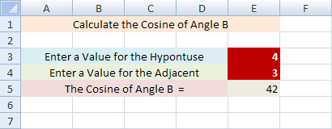 However, add a few shapes, along with some colour, and it becomes clearer what the data is for (the Cosine in the image below has been formatted to 2 decimal places): 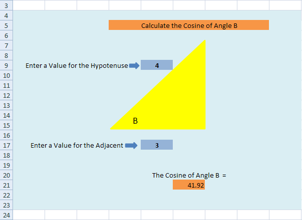 We'll now show you how to produce a spreadsheet like the one above. Don't worry if you haven't a clue about Cosines - it's not important for this lesson. (We'll show you the formula, though.)
How to Draw a Shape on an Excel SpreadsheetTo insert a shape on your spreadsheet, do the following.
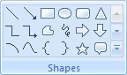 On the Shapes panel, click the drop down arrow to see all the available shapes: 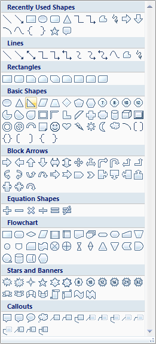
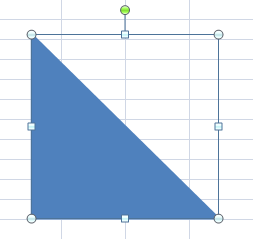 The green circle allows you to rotate the shape. The other circles (and squares) are sizing handles. Hold your mouse down over one of these and drag to resize your shape, if it's not the size you want it. But we'd like the triangle pointing the other way. So hold your mouse down on the green circle, and drag to rotate your triangle: You should see an outline, like the one above. Let go of your left mouse button when it is in position: 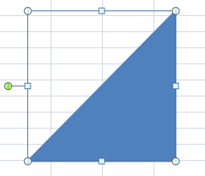 As you can see, the green circle is now on the left hand side. If you look on the Excel Ribbon at the top, you'll notice that it has changed - a Format tab has appeared. You'll see all the various options for shapes. Locate Shape Fill on the Shape Styles panel, and click to see the Fill options: 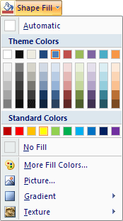 Select a colour for your triangle. You'll also want to select a Shape Outline, underneath Shape Fill. Select the same colour as your Fill, and your triangle will look something like this one: 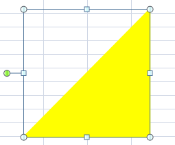
Add a Text Box to an Excel SpreadsheetTo get the letter B in the triangle, we'll add a text box. So, on the Insert Shapes panel again, you'll notice a Text Box option. Click on this to select it: 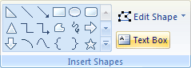 Now move back to your spreadsheet, hold down your left mouse button, and drag out a Text Box. Let go of the left mouse button and you'll have something like this: 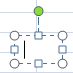 With the cursor inside of the Text Box, simply type the letter B. Because it's text, you can highlight your letter and format it. In the image below, we've increased the font size: 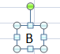 We now need to drag our Text Box onto the shape. Move your mouse over the Text Box until the cursor changes shape to four arrowheads (this can be tricky): 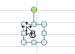 Once your cursor changes shape, hold down the left mouse button and drag your Text Box on to the triangle: 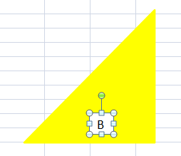 With the Text Box selected, use the arrow keys on your keyboard to nudge it in to position. Fill the Text Box in the same way as you did for the triangle. It will then look like this: 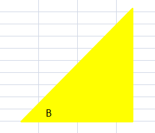 If you need to move your triangle and Text Box, you can select them both at the same time, and drag them as one. Click on your Triangle to select it. Now hold down the CTRL key on your keyboard. With the CTRL key held down, click on your Text Box. Both will now be selected: 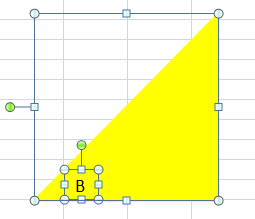 With both the triangle and the Text Box selected, hold your mouse over the selected shapes. When your cursor changes to the four arrowheads, hold down the left button and drag your shapes to a new position: 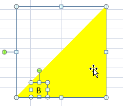 You can finish off the formatting in the normal way. In the image below, we selected all the cells surrounding the shape, and added a background colour from the Home menu, Font panel. 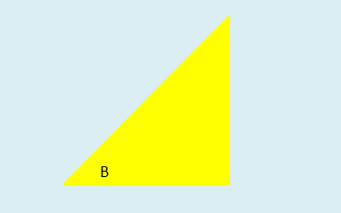 If you look again at the finished version, you'll see the rest of the colours we chose. These are just filled cells from the Home > Font panel: The text in the cells is just entered in the normal way. The formula for the Cosine in cell G22 of our spreadsheet has this syntax: =DEGREES(COS(Adjacent_Cell_Reference / Hypotenuse_ Cell_Reference)) An example of how to use is it this: =DEGREES(COS(F18 / F10)) When the user types in a value for the Hypotenuse or the Adjacent, the Cosine number will change. But you can add any shapes you want to liven up your spreadsheet. It doesn't have to look plain, white and dull!
And that completes this beginners course on Excel 2007 and Excel 2010. It may have a little taxing along the way, but if you've finished all of it, you should have quite a few new skills to show off! |
|||||
|